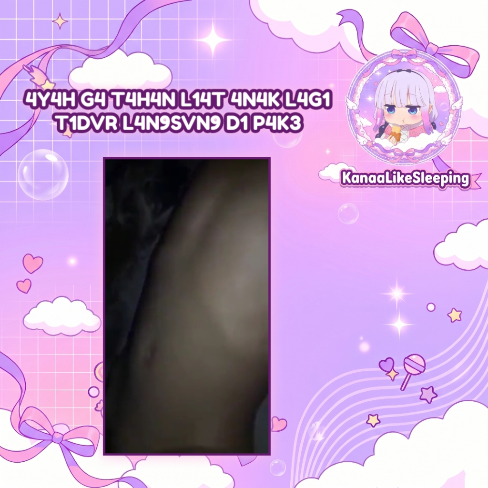
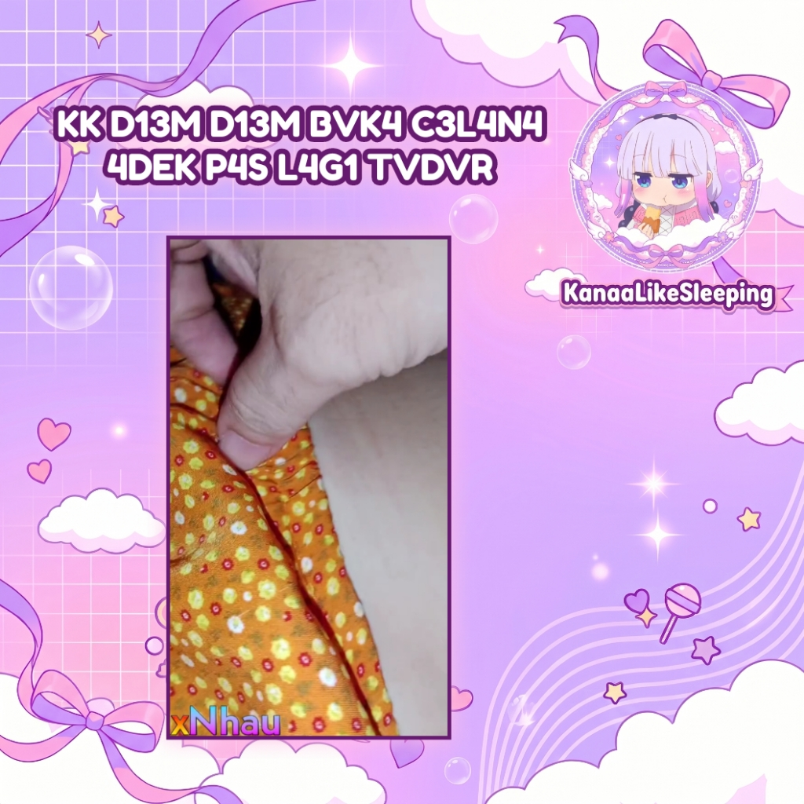

Info & Update
Klik untuk memutar video
Anak Lagi Tidur DiGas Ayah Malam Malam

Ayah Ga Tahan Liat Anak Tidur Langsung DiPake

KK DIEM DIEM BUKA CELANA ADEK PAS LAGI TIDUR
Audio desain futuristik, bass drop, glitch & UI sounds.